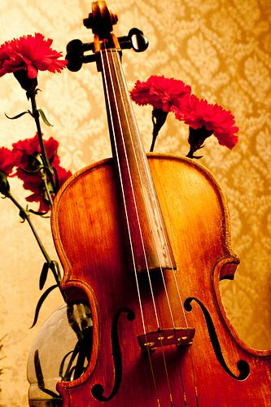
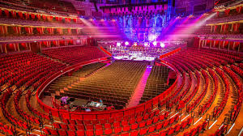
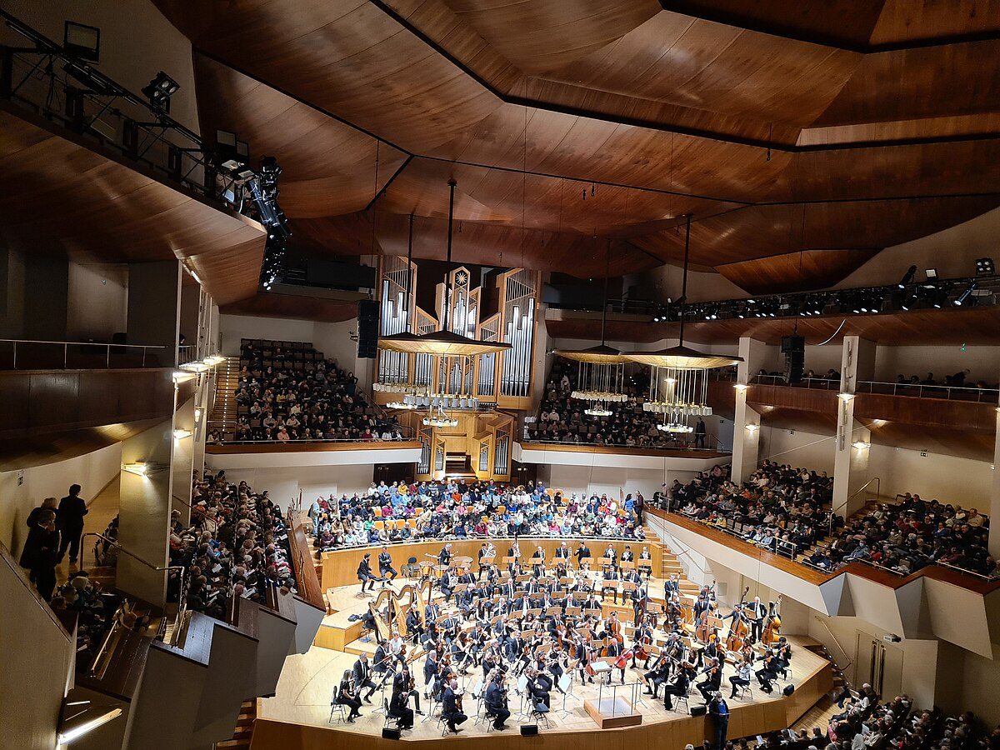

Lista de Eventos Musicales
A continuación, te presentamos una lista de eventos de música clásica que no te puedes perder. Algunos están destacados por su relevancia y prestigio:
| Nombre | Época |
|---|---|
| Cuarteto suena con música | Bandas sonoras |
| Concierto especial, tributo Harry Potter | Bandas sonoras |
| Concierto de Viola - Telemann | Barroco |
| Concierto de Cuerdas - Tchaikovsky | Romanticismo |
| Wolfgang Amadeus Mozart Sinfonía núm. 38 en Re mayor, K.504, «Praga» | Clasicismo |
A continuación se detallan los conciertos
Cuarteto suena con música
Fecha: 20 de Diciembre
Ubicación: Badajoz, Extremadura
Descripción: Un espectaculo sonoro en el cual se interpretarán villancicos populares, bandas sonoras y mucho más

Valoración: ★★★★★
Concierto especial, tributo Harry Potter
Fecha: 3 de enero de 2025
Ubicación: Badajoz
Descripción: Una interpretación de la famosa saga de películas y libros que no dejará indiferente a NADIE

Valoración: ★★★★★
Concierto "El señor de los anillos"
Fecha: 19 de Enero de 2025
Ubicación: Elvas, Portugal
Descripción: Disfrutaremos rememorando la famosa banda sonora compuesta por Howard Shore a manos de uno de los cuartetos que más popularidad han ganado estos últimos tiempos.

Valoración: ★★★★☆
Concierto de Viola - Telemann
Fecha: 15 de abril de 2025
Ubicación: Auditorio de Extremadura, Badajoz
Descripción: Un recital de viola interpretado por un talentoso violista, con obras destacadas de Georg Philipp Telemann.
>Valoración: ★★★★☆
Sinfonia llorante
Fecha: SEPTIEMBRE
Ubicación: ies albarregas
Descripción: suspender defensa
>Valoración: ★★★☆☆
Felicidad tras Aprobar
Fecha: 10 de Enero de 2025
Ubicación: Merida
Descripción: Aprobar la defensa
>Valoración: ★★★☆☆
Concierto de Cuerdas - Tchaikovsky
Fecha: 10 de Enero de 2025
Ubicación: Royal Albert Hall, Londres
Descripción: Un evento que presentará algunas de las piezas más conocidas de Tchaikovsky, interpretadas por una orquesta de cuerdas de primer nivel.
>Valoración: ★★★☆☆
Wolfgang Amadeus Mozart Sinfonía núm. 38 en Re mayor, K.504, «Praga»
Fecha: 10 de mayo de 2025
Ubicación: Auditorio Nacional, Madrid
Descripción: La obra destaca por su inventiva orquestal, utilizando un estilo pleno de detalles orquestales y una melodía contagiante. A lo largo de la sinfonía, Mozart fusiona su característico sentido de la armonía con pasajes de gran claridad y brillantez, haciendo de esta obra una muestra sublime de su genio compositivo.
Valoración: ★★★★☆